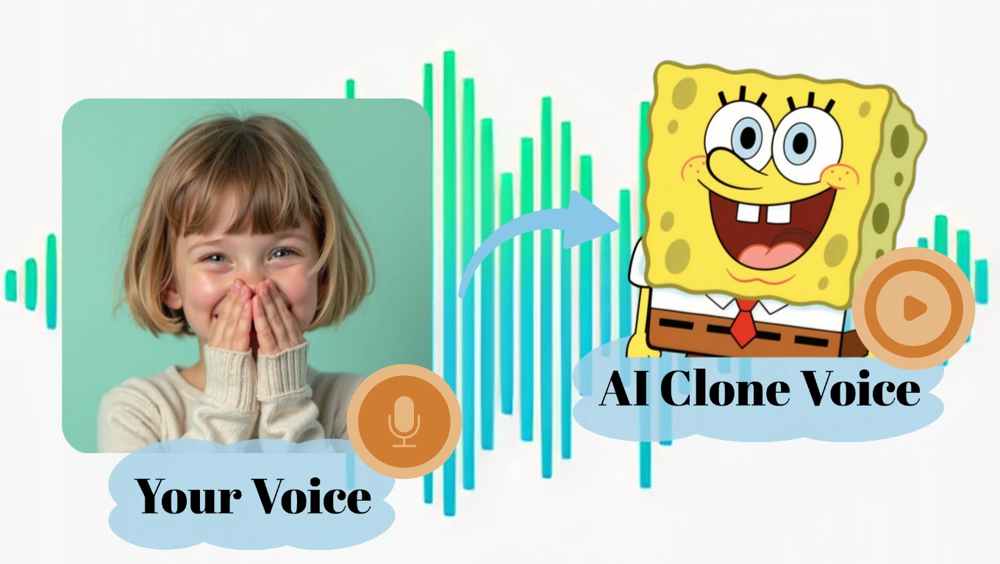

用 DreamFace 把一张照片变成会说话的数字人，看完这篇你就能上手
从上传照片到导出第一条数字人视频，手把手走一遍 DreamFace 的完整流程，顺便把新手最容易踩的几个坑提前告诉你。
这篇教程结束的时候，你应该能用 DreamFace官网 把一张普通的正面人像变成一段能开口说话的数字人视频——不需要剪辑经验，不需要录自己的声音，选一张照片、写一段脚本就行。
准备工作
开工前先确认三件事：
一张合格的人像照片。正面或接近正面（偏转不超过 15°），脸要完整露出来——口罩、墨镜、浓密络腮胡都会让 AI 无法正确提取面部结构。光线尽量均匀，别逆光，分辨率最好 512×512 以上。中性表情或微笑就行，咧嘴大笑这种夸张表情后面做对口型容易翻车。
一段干净的音频。两种方式都行：直接上传一段你自己的录音样本做语音克隆，或者用 DreamFace 内置的 AI 声音。如果自己录，背景杂音要少，别用过度压缩的 MP3，WAV 或 FLAC 更好。脚本长度控制在 30 秒视频 50~80 字这个量级，太长后面口型对不上。
一个账号。安装包从官方下载拿，免费版就能跑通整条流程，只是输出标清、有水印、并发只有 1 路。想一次扔几十条任务让它自己跑完再回来收的话，至少得专业版起步有 3 路并发。
第一步：上传照片，选数字人入口
登录后进到工作台，你会看到好几个功能模块——数字人视频、动作迁移、静图转动态、实时换脸。咱们今天就盯紧数字人视频这个入口，也是 DreamFace 最成熟、用得最多的功能线。
点进去之后首先就是上传照片。选那张提前准备好的正面人像，拖进去或者点上传都行。DreamFace 会自动识别面部结构，给你一个预览框——这时候留意一下它圈出来的脸有没有偏、有没有把头发或耳朵当成脸的一部分。如果预览就歪了，直接换照片，别硬撑，后面生成出来一定惨不忍睹。

照片处理完会生成一个数字人角色。这个角色会跟你的照片长得一模一样，但接下来要让它开口说话，还得给它配声音和脚本。
第二步：选声音——克隆自己的或者直接用内置的
声音是数字人效果好不好的关键变量。DreamFace 给了两条路：用内置 AI 声音，或者克隆你自己的声线。
内置声音库里有几十种预设声线，覆盖普通话、粤语、英语、日语等 19+ 种语言，男女声、老少声都有。直接点"试听"就能 preview，选一个跟你预期最接近的就行——新手先用内置声线最稳，克隆声线搞不好反而出问题。
想玩得更像自己？进语音克隆工坊。点一下"录制新声音"，按提示读一段 10~30 秒的文本就行——内容 DreamFace 会给你配好，照着念。念的时候保持正常语速和音量，别太快也别太做作。录完等个几十秒，AI 就提取出你的声纹特征了，以后生成数字人视频选这个克隆声线就行。

这里注意一个细节：克隆声线生成后可以跨语言用——你用中文样本克隆的声线，生成英文数字人视频时也能用同一套声纹，只是发音会是英语。这个功能对做多语种内容的人特别实用，不用每种语言都重新录一遍自己的声音。
第三步：写脚本，设置口型和语速
声音配好之后就是输入脚本了。DreamFace 支持两种输入方式：直接粘贴文字脚本，或者上传一段现成的音频文件让 AI 自动转文字再对口型。
文字脚本的话，控制一下长度。30 秒的视频建议 50~80 字，别写太密——语速调在 0.9 到 1.1 倍速之间最自然，快过 1.5 倍口型同步就开始掉链子了。如果你的脚本有一分钟以上，建议拆成两段分别生成，合成的时候自己拼一下。长视频后半段口型变差是目前技术局限，拆段是最简单的解法。
音频文件的话，DreamFace 会自动做语音识别拿到文字稿，然后用你选的声线重新生成对口型。如果你想保留原声的节奏和语气，这个方式比直接写脚本更灵活——比如你录了一段采访录音，想让数字人"说"出同样的内容但换一张脸，就用这个。参数对照表和各类型脚本的推荐字数，DreamFace文档里有整理好，省得你自己一个个试。
第四步：生成，等结果
参数都调完之后点"生成"。DreamFace 的生成速度在同行业里算快的，但具体多久取决于你选的分辨率、视频长度、以及当时的服务器负载。
免费版只有 1 路并发，高峰期（一般是白天 10 到 12 点、晚上 8 到 11 点）可能要排队。建议早上或者凌晨跑，速度明显快。如果是专业版以上，把批量模式打开——设置好几条任务让它同时跑，整体效率会比一条一条跑高很多。
生成过程中工作台会显示进度条和队列位置。别频繁取消重排，反而会打乱队列优先级。
新手最容易踩的三个坑
坑一：口型对不上。90% 的情况是照片本身不行——脸没露全、逆光、表情夸张。换一张干净的正面照，比调任何参数都管用。其次检查音频有没有杂音，DreamFace 有人声分离功能，先跑一遍再用来对口型，效果会好很多。
坑二：生成出来脸歪了或者融在一起。这通常是照片里有复杂遮挡——浓密胡子、夸张的 AI 滤镜变形、脸部有特效。解决办法：用一张干净的无遮挡人像做基础，特效等后期用剪辑工具叠加。
坑三：语速太快导致后半段崩盘。脚本写太长、语速调太猛，都可能让后半段口型彻底乱掉。长脚本拆成 30~60 秒的小段，每段单独生成，是目前最稳的方案。
还能玩什么
走完上面四步你已经能出第一条能用的数字人视频了。但 DreamFace 的远不止这些——静图转动态可以让你的产品图或风景照自动加氛围动效，DreamAct 动作迁移能把一段跳舞视频的动作套到任何照片上，语音克隆工坊里还有 AI 翻唱、演唱声线转换的玩法。这些能力都在同一个工作台里，不用在不同应用之间来回切。